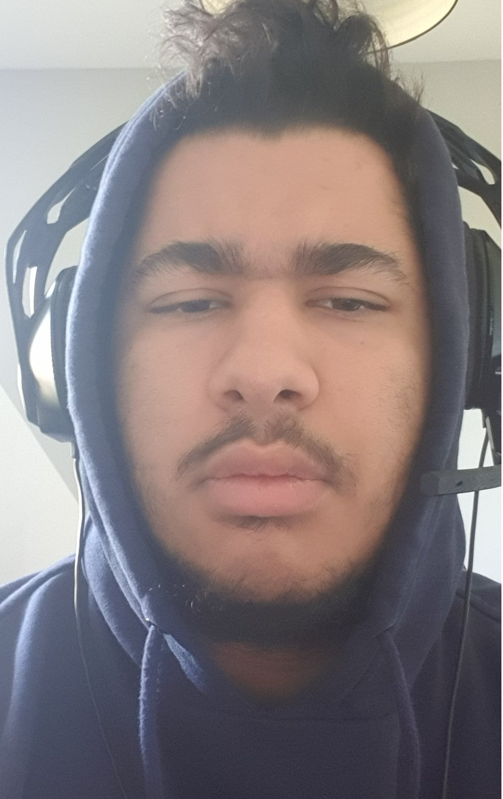

Numéro de téléphone : 06 95 35 69 27
Adresse e-mail: aissageiffel@outlook.com
LinkedIn : Je ne possède pas de compte
Numéro fixe : 05 92 64 25 33
Je m'appelle Aïssa KAHLOUL, je vis à Cadaujac avec ma famille et mon chat. J'ai étudié dans le collège de Cadaujac et j'ai par la suite étudié au lycée Gustave Eiifel à Bordeaux.
Cette année j'ai pu intégrer l'IUT informatique de Gradignan et c'est dans le cadre d'un projet que j'écris ce CV.
Je suis débutant et n'ai jamais codé avant d'être entré à l'IUT donc j'ai quelques bases en java pour l'instant.
Je n'ai pas réellement eu de formation car comme dit précedemment je n'ai pas fait d'informatique avant de rentrer à l'université
J'ai réalisé mon stage obligatoire de 3ème dans une imprimerie numérique et j'étais assigné au département informatique, il s'agissait plus exactement d'infographisme car j'ai pu utilisé une tablette graphique afin de créer un logo pour un livre. Mes tuteurs lors de mon stage maistrisaient le logiciel photoshop de manière assez impressionante, ils m'ont fait découvrir énormément de fonctionnalités.
J'ai pratiqué le rugby pendant huits ans en club mais j'ai fini par arrêter et je pratique ce sport de temps en temps hors club, mon loisir principal est le gaming uniquement si je ne suis pas tout seul, je n'apprécie pas jouer seul aux jeux vidéos.